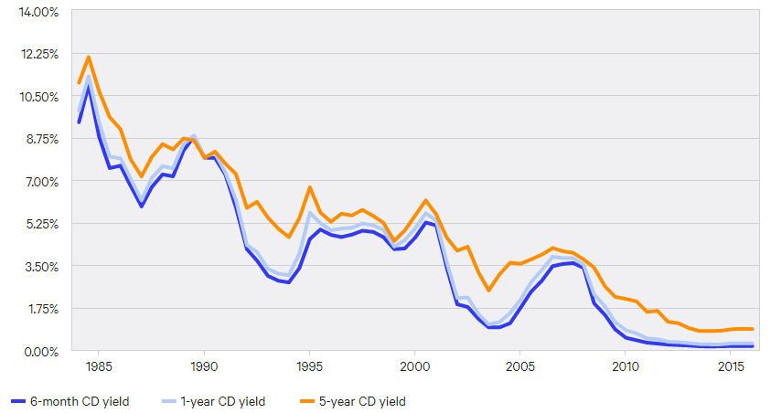
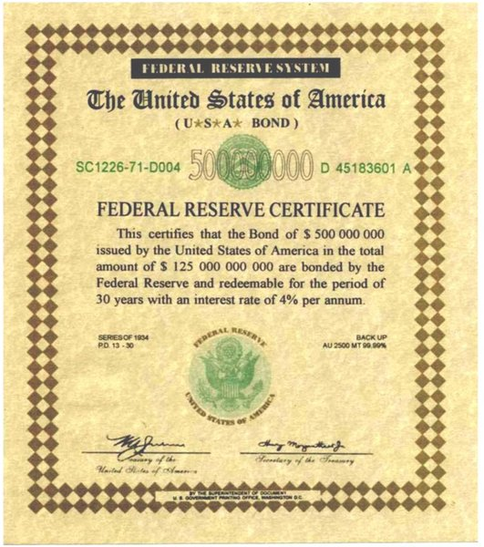
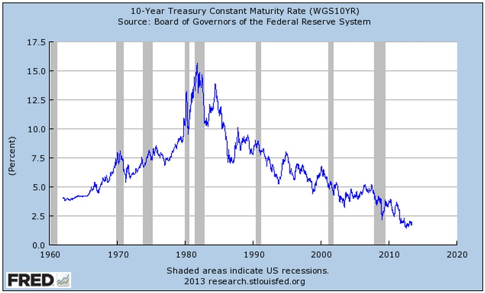
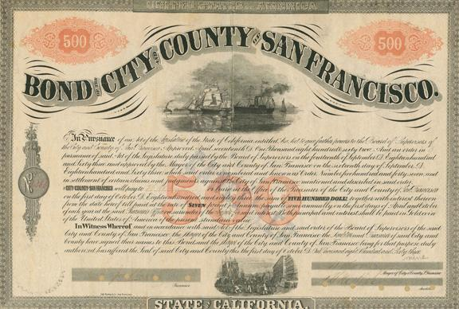
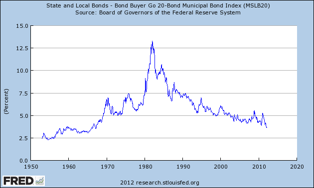
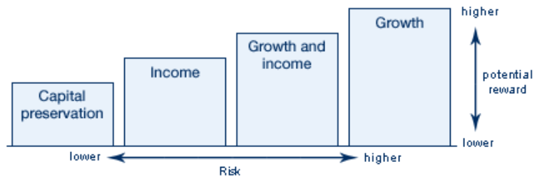

< Back to Home
The Types of Investments
Certificate of Deposit
A savings certificate (usually issued by commercial banks) that has a fixed interest rate and a ‘maturity date’ in which the money cannot be touched until that date. These are one of the lowest risk investments one can put their money in, as their money is protected by the bank up to $250,000 and can realistically only be lost if the bank goes under. Since these investments are so low risk, the average payout of CDs are around .4% to .5%.
The reason people invest in CDs is because they are incredibly safe and insured. The other advantage that CDs have is the fixed rate that they offer. With this in mind, one can estimate what they can earn and plan for their future relatively easily.
CDs are low risk, but also low reward. The incredibly small interest rates that CDs payout mean that one needs to invest their money for a exorbitantly long time or put down a large principle. Additionally, CD penalties make withdrawing money from accounts punish the holders a lot more than they would in other investment opportunities.

People who put money in CDs need time for that money to grow. A CD is a safe bet for parents who need to invest in a child’s college fund, as the money is guaranteed with a fixed rate for future planning. Additionally, those who are incredibly risk averse, more elderly people and those with not a lot of money in the first place, would be interested in CDs.
In 1985, CDs used to payout nearly as much as 11-12%, but this was mainly because of the large inflation rates of the time. Throughout history, the number has slowly dwindled, with today’s interest rates fluctuating around .16-.86%.
Common Stock
Common Stock is a method of purchasing part of a company and then earning returns on this based on the earnings of the company. Common stock owners have the lowest priority for board decisions and have the rights to a company’s assets after preferred stockholders have been paid out. Common stock is not insured
Common stock has a relatively high payout compared to other modes of investing. Additionally, the stock market allows companies to receive the benefits from the money they collect from their owners, allowing the market to thrive along with the stockholders to earn interest and dividends for their ownership.
Unlike CDs, common stock is not insured and the risk is slightly higher in this type of investing. Additionally, in the event of liquidation of a company, the common stockholders are last in line to claim their assets behind preferred stockholders and creditors.
Common stock is for investors that are looking for a relatively safe investment but are looking for a profit. Younger audiences with money that they want to have grow for retirement are primarily what these investments are suited for.
Based on the S&P 500 return rates, back in 1960, one only had around a .36% return on their investment but returns have steadily risen over time, and in 2017 the return rate was 21.64%. However, higher yield also means higher risk, so some years, like 2002, saw a -21.97% decrease in return, and the great recession of 2008 saw a -36.55% return. Over time, one can expect stocks to have an average return rate of 6-8% as we look across time.
Preferred Stock
Like common stock, preferred stock is a method of purchasing part of a company which allows one to earn returns based on the earnings of the company. However, preferred stock owners have priority for payouts on dividends and have fixed dividends.
Preferred stock shares a lot of the benefits of common stock with the addition of priority. In the event of liquidation of a company, the preferred stockholders will be allowed to receive their assets much sooner than common stockholders.
Just like the common stock drawbacks, the preferred stock risk is similar to that of common stock. Additionally, preferred stock is sensitive to interest rate since the dividend payment is at a fixed percent. This means that stock price can fall while interest rates can still climb, lowering dividends.
This type of investment is suited towards more well versed stockholders who understand the company that they are investing in. Usually those who are a little older and use preferred stock as a means of income while still claiming the benefits of preferred, so larger income than other common stockholders.
Today, dividends are fixed at 6% for preferred stockholders. However, preferred stock just grants priority to shareholders for dividends and claiming assets, so returns are historically just like common stock.
Federal Government Bonds

Federal Government Bonds are a security issued by the national government in order to fund government spending. These types of bonds, especially in the US, are almost risk-free and pay out a bond dividend at a fixed interest rate and are sold in denominations of 10,000 to 1 million dollars. These types of bonds are not insured.
These types of bonds are almost risk-free. The only reason that the government could not pay back the bond is in the case of the country declaring bankruptcy and the central government shutting down. In the US, this possibility is near zero chance. They are also widely traded and are easily accessible in the market.
However, government bonds, since they are so low risk, have a very small interest rate. The bond also does not account for the inflation rate of the country, unless they are a select few bonds available, and are dependent on the interest rates of the country, which could mean the prices can dip very low. Additionally, thye are only available to a select few, since the denominations are so high for these.

Government bonds are for those who want their money secure. Elderly people and risk averse investors are more likely to invest in these bonds since they don’t need to save up for anything big and are stable where they’re at. Since they’re so expensive, companies and wealthy individuals are likely to buy these investments.
Government bonds in 1960 returned around 5% and steadily rose to 15% by the early 1980s. Since then, the interest rates have fallen over time to about a little less than 3% today.
Municipal Bonds

Municipal bonds, like Federal Government Bonds, are securities issued by the government to fund government spend- but municipal bonds are held on the state and city level. The risk level of these bonds is again very low, so the return is smaller in the form of interest and bond dividends. These bonds are sold in denominations of a minimum 5,000 dollars and increase by multiples of 5,000 dollars. Again, these bonds are not insured.
An advantage of these types of bonds is that they are usually exempt from federal income tax, and if you live in the specific area that you bought the bond from, you might be exempt from state tax on that income.
Because the risk of these investments are very low, the interest rates are also low. Additionally, the rates might not outcompete inflation from year to year, meaning that the investment may lose value over time faster than it can earn interest.

Municipal bonds are a safe bet for those who want to invest in funding their city’s activity over a longer period of time. Since these bonds are less expensive than federal government bonds, people with median incomes are more likely to invest in these. People who live in the city that they buy the bond from will invest in these so that this income is tax exempt and the most profitable.
Municipal bonds tend to average around 3.75% today but as far back as 1970 used to be about 6.5%. Like the other bonds, they peaked in the early 1980s averaging at 11.5% and then taking a steady decline for today.
Mutual Funds
Mutual Funds take a pool of money, either from an individual or a group, and split that money up to put in multiple investments, usually stocks, bonds, and cash savings. A mutual fund is managed by a ‘money manager’ who advises on the split of the pool and has no specified dividends for the investment. The investment is not insured and has the risk of both stocks and bonds associated with it. Mutual funds on average return around 5-10% with a medium to high risk associated depending on the type of mutual fund.
Money Market Mutual Fund
The goal of this fund is to earn investment and retain a net asset value of $1 per share. They’re usually made of up high-quality yet short term investments, having a low risk, low return brand to it.
Income Fund
Income Funds focus in on interest rather than capital gain. Because of this, the price is inversely related to how interest rates are doing at the time. Because they focus on interest, they are usually long term mutual funds.
Growth Funds
Growth funds are the polar opposite of Income funds, in that they purely focus on capital gain rather than cumulative interest. Because these funds focus on high gaining investments, the risk for these types of funds are above average, but have a higher yield.
Income and Growth Funds
Like Income Funds, these funds focus on interest or dividend payments but also strive to create capital gain for the investor, like the Growth fund. These risks have a moderate risk to their name, but do not bring in as much yield as pure growth funds.

Unlike any other investment, a mutual fund splits up the money to become diversified. By doing this, failure of one company does not mean that all the money is lost. Mutual funds are also relatively easy to sell, as they are highly valued by investors. Finally, mutual funds are managed by professionals, so the money is much safer than if one were to just put their money in random stocks from their gut feeling.
Mutual funds cost money to operate. The money managers take a fee to operate and this can decrease returns on investment over time. Any investment that costs more than 1% in sales charges and expense ratios is considered high cost for operation of the mutual fund (or .75% for Mr. Stanke). Mutual funds are not tax efficient since they compute all capital gains from the fund for that year and tax on it, even if the investor didn’t take home any gain from that specific year.
Mutual funds have a varied audience. For those who are ‘less risk averse’ and want someone to manage their money for them, mutual funds are their way to go. But mutual funds still cost money to operate, so those with a medium to high income and many years to let this grow, a young-ish audience, will invest in these.
Looking across time from 1960 to the present for a multitude of mutual funds, one can expect an 8-10% yield if held across that period. This is not including the expenses of keeping up the mutual fund, however. Today, depending on how long the mutual fund lasts, one can expect an average return of 6-12% annually, again, not considering the funds taken out to keep up with the mutual fund.